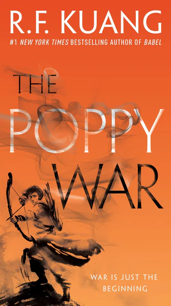

“Language was always the companion of empire, and as such, together they begin, grow, and flourish. And later, together, they fall” (Antonio de Nebrija, 1492)
I have never encountered, in my entire life, a quote so fitting as this. What a start that makes you come back to chapter one even after finishing the book months ago. I think it is a real art to choose the one epigraph that will capture an entire journey in one sentence. The set tone lingered even after fifteen pages where I finally placed my first sticker around the word loss.
R.F.Kuang dwells on the word, how it is completely inadequate to really show what the main character has lived through.The English word for it didn’t feel enough; it felt passive, implying only that something was missing, could potentially be filled back up. Meanwhile, the reality of Robin, who was orphaned at a young age and ripped from Canton, dragged to Oxford, felt irreversible.
Looking back now, highlighting the one word that quite literally mirrors the mechanics of the magic system of Babel, was almost poetic. Silver-working; fueled by the gap between an original meaning and its translation, where the wider the loss, the more powerful the silver becomes. The empire was able to exert total dominion over the rest of the world by exploiting and dumbing down the linguistic nuances of other languages that were converted into supernatural energy. It is precisely why the system design of the magic feels haunting, the author uses it as a reflection of how imperialism treats humans. Empires tear people away from their culture, strip them of their identities and force them into an unfamiliar world. The collateral damage left behind, ultimately, becomes the power that feeds the system.
Robin himself is a living proof of this lost meaning. Ripped away from his motherland from a young age, translated into Oxford’s Babel, the heart of the Royal Institute of Translation, and redefined with Greek and Latin. Detached from Canton, racially othered in England. No longer a person, but a tool for a country that is waiting to use him.
Meanwhile, Ramy who feels loss through the irony of survival. Brought from Calcutta to Britain to be exploited by the same society that thinks of him as a low class subject. Yet he has to play a character who is always brilliant, always smiling, always grateful, just to stay alive. The feeling of loss is a constant for Ramy, an erasure of his identity. He is a foreign word forced into a colonial language, trying to find its way in a sentence that was written to destroy him.
The absolute heartbreaking devastation I felt while witnessing the dynamic between Robin and Ramy. Through their continuous relationship, the author delivers a brilliant critique of colorism and relative privilege within the white institutions. The mixed heritage of Robin, mentioned by Ramy, brought less judgement by the elite that resided in the stone cold walls of Oxford. As Ramy faced the full force of racial hostility, Robin's lighter complexion offered a “pass”, a more conditional acceptance within the halls of the institution. After a sense of alienation, “Birdie” is stranded in the middle, where he is not white enough to be treated equally but too disconnected from Canton to actually feel at home anywhere.
The layered oppression expands even further with Victoire, who carries a uniquely heavy burden of double prejudice, studying in a predominantly male institution and being marginalized as a Black woman. When Robin and Ramy have to deal with racism of the British Empire, Victoire has to fight through racism and misogyny that comes within the academy. Due to overlapping systematic biases, she is forced into a flawless, quiet and enduring character when her peers have more room to make mistakes. It creates a complex dynamic within the core friendgroup, and highlights the blind spots. As much as the boys understand the struggles and are in solidarity with her, they still benefit from the patriarchal benefits. Even Letty, who considers herself a feminist, is completely oblivious to the reality that Victoire lives in. Victoire is not allowed to be a performative rebel like Letitia Price; vigilance is the only way she may ever feel the luxury of being safe.
At first, Letty appeared as the ideal progressive female companion, the supportive and open-minded white girl who sits among ostracized students and regards them as her dearest friends. It seemed to genuinely upset her when other students showed prejudice around the group. Believing herself to be an ally, Letty was convinced that polite reforms and a kind heart could fix this deeply broken system. The author quickly crashes the reality of her illusions by showing that the aesthetic of rebellion, adored by her so much, is far too heavy to carry through. Whenever the friend group faced the brutal nature of the British Empire, she would immediately retreat into “white fragility”. Instead of acknowledging her privileges, she would make herself a victim of the conversation and demand comfort from the same people who are actually suffering from it.
The moment Letty is faced with the violent and unforgiving nature of true revolution, she chooses shelter provided by the system over the safety of her "friends". "Her walking towards authorities shows her ability to exist on the fringes of revolution whereby she can retreat safely when things go wrong. A privilege not given to the rest of the characters. The author shows readers that the benefits of the system will bring to the front the limits of their progressive takes. The utter ignorance and performative care will always be considered the purest forms of malice.
Babel shattered any lingering fantasies that readers felt about the world and its history. It shows layers of the broken system that are impossible to ignore but also act upon. What a devastating betrayal to write such a profound masterpiece in the same language that once permanently scarred your hometown. Babel became a place that treated languages not as a bridge for human connection but rather as an extractive resource, once more proving that words, meanings and whatever is in between can be violently colonized just the same as land.
A love letter to Griffin
My eyes still water at the sheer mention of the older half-brother and the “failed” predecessor. A boy from Macau who was brought to Oxford to be a translator before he was discarded. Completely wiped and erased from Babel, by one person who was supposed to be the trusted adult. Almost identical to Robin, a mirror, Griffin was rejected by the same system for forgetting his mother tongue. This led to a series of events that would make him a leader to an underground operations group called Hermes Society and to fight the colonial power of the British Empire.
You deserved a home that didn't demand silence for mere safety. A place that didn't require translation; a world without blood. You are so much bigger than what you were used for. Maybe one day I will be as brave as you are, but just for now, I will think of your house built on broken bones and stolen tongues, and wish, and wish, and wish, finally reuniting with your half-brother will bring peace and family that you couldn’t have.
Griffin, and the loneliness in resistance Griffin, the isolation and survival Griffin, and the damage of rotten system Griffin, the burden of being the oldest and first Griffin, and the burden of warning everyone else